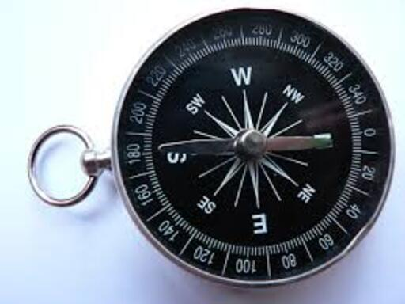

5 DNMADE 3ème année
5.1 Vocabulaire
| Français | English |
|---|---|
| aborder un problème | to address an issue |
| augmenter | to increase |
| bien que | although |
| dans quelle mesure | to what extent |
| de plus | furthermore |
| dès le départ | right off the bat |
| en dépit de | despite |
| exécution, mise en œuvre | implementation |
| les résultats | the findings |
| mettre à nu | to lay bare |
| pertinent | relevant |
| puisque | since |
| se concentrer sur | to focus on |
| un but (p…) | a purpose |
| un échantillon | a sample |
| une tendance | a trend |
| un moyen de | a means to |
| un résultat (o…) | an outcome |
| un résumé | a summary |
| viser à, avoir pour but de | to aim to |
| gâcher | to waste |
| un conseil (t…) | a tip |
| un conseil (a…) | advice |
| une poubelle (UK) | a rubbish bin |
| une poubelle (US) | a trash can |
| évaluer | to assess |
| réparer | to fix |
| se plaindre, geindre | to whine |
| stupéfier, “scotcher” | to blow |
| résoudre | to solve |
| fournir qqch à qn (p…) | to provide sb with |
| fournir qqch à qn (s…) | to supply sb with |
| actuel | current |
| une étude, un sondage | a survey |
| développer une compétence | to hone a skill |
| être engagé à | to be committed to + ING |
| défendre (une idée) | to advocate |
| développement durable | sustainability |
| un plan de mesures | a scheme |
| faire l’éloge de | to praise |
| se moquer de | to poke fun at |
| inclure | to comprise |
| en apparence | seemingly |
| accueillir, héberger | to host |
| se mettre en route, chercher à | to set out |
| une recette | a recipe |
| à l’intérieur de | within |
| attacher, fermer | to fasten |
| champ, portée, marge de manœuvre | scope |
| bien aimer qqch | to be fond of stg |
| agencement, disposition, maquette | a layout |
| un but, un objectif (p…) | a purpose |
| un scrupule | a qualm |
| qui s’ensuit, final | eventual |
| un équipage | a crew |
| probable, susceptible | likely |
| s’excuser de qqch | to apologize |
| agile | nimble |
| avertir | to warn |
| diriger qqch | to head stg |
| rendement, productivité | output |
| manipuler qqch | to handle stg |
| confier qqch à qn | to entrust sb with stg |
| une esquisse | a sketch |
| une forme | a shape |
| continuer, poursuivre | to carry on |
| vivant, plein d’entrain | lively |
| reconnaître, admettre | to acknowledge |
| exercer une influence sur | to exert influence on |
| numérique | digital |
| façon de penser, état d’esprit | mindset |
| au cours de (temps) | over |
| un logiciel | a software |
| sinueux | windy (/aI/) |
| un brouillon | a draft |
| aiguiser, affiner | to hone |
| to hire | embaucher |
| décomposer qqch en | to break down into |
| véritable, réel | actual |
| rationaliser, rendre plus efficace | to streamline |
| finir, aboutir | to wind up |
| une exigence, une condition | a requirement |
| personnalisé (b…) | bespoke |
| personnalisé (t…) | tailored |
| trompeur (…ful) | deceitful |
| trompeur (…ive) | deceptive |
| qui induit en erreur | misleading |
| un accord, une approbation | an approval |
| papeterie | stationery |
| finir par faire qqch | to wind up doing stg |
| véhiculer, transmettre | to convey |
| rappeler qqch à qn | to remind sb of stg |
| convaincre qn de dépenser plus | to upsell |
| attendre qqch de qn | to expect sb to do stg |
| un modèle | a template |
| une affiche | a billboard |
| audacieux | bold |
| aller chercher, atteindre | to fetch |
| engranger, récolter | to bag |
| un rejeton, une ramification | an offshoot |
| une sérigraphie | a screenprint |
| défigurer | to deface |
| un bien, un actif, un atout | an asset |
| déchiqueter, réduire en lambeaux | to shred |
| une vente aux enchères | an auction |
| un dollar (fam.) | a buck |
| un gros titre | a headline |
| un point de bascule | a tipping point |
| un décor, un arrière-plan | a backdrop |
| caracoler | to prance |
| contempler, regarder fixement | to glaze at |
| être bloqué | to be stuck |
| un objet, un jeton, une marque | a token |
| la propriété, la possession | ownership |
| cupide | greedy |
| une arnaque | a scam |
| un service public | a utility |
| chercher | to watch for |
| une flambée, une poussée | a surge |
| une monnaie, une devise | a currency |
| un actif, un bien, un atout | an asset |
| une enchère | an auction |
| un droit, une prétention | a claim |
| assaillir | to beset |
| une étagère | a rack |
| une cabane | a shed |
| surgir brusquement | to spring up |
| se connecter | to hook up |
| un entrepôt | a warehouse |
| une rangée | a row |
| la richesse | wealth |
| un terrain, un domaine | a realm |
| un impact, un dégât | a toll |
| manipuler, forcer | to tamper |
| un registre | a ledger |
| des honoraires, des frais | fees |
| un cadre, un environnement | a framework |
| décoller | to take off |
| détaché | unmoored |
| changer, transférer | to shift |
| verser | to pour |
| une installation | a setup |
| un engouement | a craze |
| peu économique, qui gaspille | wasteful |
| sensibiliser | to raise awareness |
| un actif, un atout | an asset |
| une devise, une monnaie | a currency |
| un engouement, une mode | a craze |
| improbable | unlikely |
| une enchère, une offre d’achat | a bid |
| suivre la dernière tendance | to jump on the bandwagon |
| une escroquerie | a con |
| posséder | to own |
| au-delà de | beyond |
| détruire, faire disparaître | to wipe out |
| pourrir, se décomposer | to decay |
| une toile | a canvas |
| étendre, étirer | to stretch |
| l’artisanat, le talent artistique | craft |
| une tache | a blotch |
| donner la parole | to give the floor |
| gronder, passer un savon | to tell off |
| une pièce exposée | an exhibit |
| des instructions | guidelines |
| candidater | to apply for |
| une petite annonce | a job advert |
| une lettre de motivation | a cover letter |
| un poste | a position |
| une piéce jointe | an attachment |
| présenter/mettre en page | to lay out |
| le responsable des recrutements | the hiring manager |
| exact, précis | accurate |
| intenter un procès | to sue |
| s’accroupir | to crouch |
| selon, d’après | according to |
| un indice | a clue |
| comestible | edible |
| provenir de | to stem from |
| échapper à | to elude |
| menacer | to threaten |
| un but, un objectif (a…) | an aim |
| résoudre | to work out |
| destinataire, récipiendaire | a recipient |
| esquisser | to sketch |
| une vue d’ensemble | an overview |
| une mission, une tâche | an assignment |
| un fonctionnaire | a civil servant |
| démarrer de rien | to start from scratch |
| un réseau | a network |
| saluer, célébrer | to hail |
| le manque de soin, la négligence | sloppiness |
| épuré | uncluttered |
| glissant | slippery |
| mélanger | to jumble |
| qui met en colère | infuriating |
| coller derrière (en voiture) | to tailgate |
| torturer, harceler | to plague |
| élégant | sleek |
| légèrement | slightly |
| potelé | chubby |
| la couverture médiatique | coverage |
5.2 Définitions
| Français | English |
|---|---|
| to manage | to succeed in accomplishing |
| a gig | a job, usually for a specified time |
| to whine | to complain about things all the time |
| angsty | feeling, showing, or expressing anxiety |
| a mindset | a person’s way of thinking and their opinions |
| to fix | to repair, to mend |
| advice | a recommendation regarding a decision or course of conduct |
| to waste | to allow to be used inefficiently |
| tough love | love or affectionate concern expressed in a stern or unsentimental manner |
| to assess | to determine the rate or amount of something |
| to mislay | to lose something temporarily by forgetting where you have put it |
| empirical | based on what is experienced or seen rather than on theory |
| a scheme | an officially organized plan or system |
| to poke fun at sb | to make someone seem stupid by making jokes about them or laughing unkindly |
| to praise | to express admiration or approval of the achievements or characteristics of a person or thing |
| to comprise stg | to have things or people as parts or members, to consist of stg |
| to set out | to start an activity with a particular aim |
| seemingly | appearing to be something, especially when this is not true |
| fat | the substance under the skin of humans and animals that stores energy and keeps them warm |
| within | inside or not further than an area or period of time |
| to host | to provide the space and other things necessary for a special event |
| to fasten | to (cause something to) become firmly fixed together, or in position, or closed |
| to whinge, to whine | to complain about things all the time |
| an obituary | a notice of a person’s death usually with a short biographical account |
| a craft | an occupation or trade requiring manual dexterity or artistic skill |
| an aim | a clearly directed intent or purpose |
| a monotype | an impression on paper of a design painted usually with the finger or a brush on a surface (such as glass) |
| scholarly | containing a serious detailed study of a subject |
| endpaper | a once-folded sheet of paper having one leaf pasted flat against the inside of the front or back cover of a book and the other pasted at the base to the first or last page |
| cautionary | giving a warning |
| to commission stg | to request sb to create a piece of art |
| a typescript | a typed copy of a piece of writing such as a book |
| to work out | to happen or develop in a particular way |
| allotted | given or made available for a particular purpose |
| a festschrift | a volume of writings by different authors presented as a tribute or memorial especially to a scholar |
| faintly | slightly or not strongly |
| to run riot | to behave in a way that is not controlled, running in all directions or being noisy or violent |
| a revise | a printing proof that incorporates changes marked in a previous proof |
| sentient | able to experience feelings |
| a casualty | sb killed or injured in a war or accident |
| absent-minded | lost in thought and unaware of one’s surroundings or actions |
| leave | authorized absence from duty or employment |
| eyesight | the process, power, or function of seeing |
| to hone | to make more acute, intense, or effective |
| hard-knock | marked by difficult or painful experiences or circumstances |
| to fit | to insert or adjust until correctly in place |
| a draft | a preliminary sketch, outline, or version |
| to rattle | to make a rapid succession of short sharp noises |
| windy | having a curved or spiral course or form |
| softwares | programs for a computer |
| the bottom line | the primary or most important consideration |
| prospective | relating to or effective in the future |
| an approval | an act or instance of agreeing on something |
| to break down | to divide into parts or categories |
| to streamline | to make simpler or more efficient |
| a mock-up | a full-sized structural model built to scale chiefly for study, testing, or display |
| to upsell | to try to convince (a customer) to purchase something additional or at a higher cost |
| to flesh out | to provide more information about something, to make something more complete by adding details |
| to draw out | to remove, to extract |
| to cleanse | to rid of impurities by or as if by washing |
| signage | all the signs that advertise a product or company |
| closure | an often comforting or satisfying sense of finality |
| hip | very fashionable, trendy |
| premium | a high value or a value in excess of that normally or usually expected |
| to wrap up | to summarize, to bring to a usually successful conclusion |
| to dispel | to cause to disappear |
| to elude | to escape the perception, understanding, or grasp of |
| a recipient | one that receives |
| a purpose | something set up as an object or end to be attained |
| to stem from | to be caused by, to come from |
| an overview | a general survey, a summary |
| an assignment | a specified task or amount of work given by authority |
| to work out | to solve (something, such as a problem) by a process of reasoning or calculation |
| to sketch | to make a rough draft, or outline of |
| accurate | free from error especially as the result of care |
| to sue | to seek justice or right from (a person) by legal process |
| to drop | to cease to be of concern |
| to sell like hot cakes | to sell at a rapid rate |
| to crouch | to lower the body stance especially by bending the legs |
| edible | something that is suitable or safe to eat |
| to threaten | to express an intention to inflict evil, injury, or damage |
| according to | in conformity with, as stated by |
| to come through | to be expressed or communicated |
| a clue | a piece of evidence that leads one toward the solution of a problem |
5.3 Traductions
| Français | English |
|---|---|
| Voilà trois mois que je réfléchis à ce projet | I’ve been thinking about this project for three months. |
| Les résultats fournissent aux concepteurs graphiques des conseils supplémentaires. | The findings provide designers with additional advice. |
| L’étude cherche à déterminer dans quelle mesure les pratiques actuelles sont durables et écologiques. | The survey investigates how green and sustainable the current procedures are. |
| Le problème que cet article aborde m’intéresse vivement | I’m highly interested in the issue this article addresses. |
| Si j’avais su, j’aurais pris le temps de développer mes compétences artistiques | If I had known, I would have taken the time to hone my artistic skills. |
| De nombreux graphistes se sont engagés à promouvoir le développement durable | Many graphic designers are committed to promoting sustainability. |
| On dit souvent que la publicité est trompeuse | Advertising is often said to be deceptive. |
| Je n’aurais pas dû envoyer mes suggestions par courriel au client. | I shouldn’t have emailed my proposals to the client. |
| Notre entreprise offre des images de marque personnalisées. | Our company offers tailored brand identities. |
| Ces résultats doivent être interprétés prudemment, l’étendue de notre étude restant assez limitée. | These findings must be taken with caution as the scope of our study remains quite limited. |
| Mes recherches m’ont conduit(e) à remettre en cause les approches actuelles | My research led me to question current approaches. |
| Il y a de très fortes chances que les méthodes changent dans les prochaines années | Methods are very likely to change over the next few years. |
| On peut raisonnablement dire que les pratiques numériques ont exercé une influence considérable sur notre façon de penser | Digital uses can reasonably be said to have exerted great influence on our mindsets. |
| On pense souvent que les jeux vidéos sont mauvais pour les enfants | Video-games are often thought to be detrimental to children |
| Le problème que nous cherchons à résoudre dans cette étude n’a encore jamais été abordé | The issue we wish to solve in the present study has never been addressed. |
| Afin de tester l’hypothèse selon laquelle les graphistes ont un rôle à jouer dans le développement durable, nous avons mis en place les procédures expérimentales suivantes | In order to test the hypothesis that graphic designers play a role in sustainability, we set up the following experimental procedures. |
| On peut dire de ce diaporama qu’il a été très bien conçu. | This slide show can be said to have been really well designed. |
| Je dois admettre que leur proposition est assez trompeuse | I acknowledge that their proposal is quite deceptive. |
| Permettez-moi de vous rappeler les mots-clefs que vous aviez suggérés pour votre publicité | Allow me to remind you of the keywords you’d suggested for your advertisement. |
| Nous avons choisi cette maquette afin de mettre en valeur le logo. | We chose this layout in order to enhance the logo. |
| Pourriez-vous revenir quelques diapositives en arrière? | Would you mind going back a few slides? |
| Ils ont refusé toutes les propositions que nous avons faites. | They turned down all the offers we put forward. |
| J’ai très peu dormi depuis que j’ai commencé à travailler sur ce projet | I have slept very little since I started working on this project. |
| On nous a enfin donné des informations sur les nouvelles compétences | At long last we have been given new information on the new skills. |
| Je commencerai à rédiger quand j’aurai terminé d’organiser mes idées | I will start writing when I have finished organizing my ideas. |
| Si les choses étaient plus claires, je serais plus efficace | If things were clearer, I would be more efficient. |
| Aujourd’hui je vais vous présenter le projet sur lequel nous travaillons depuis décembre | Today I’m going to present the project we’ve been working on since December. |
| Au cours des trois derniers jours, nous avons contacté une vingtaine d’entreprises afin de décrocher un investissement | Over the last three days, we have contacted 20-odd companies to land an investment. |
| Nous ne sommes pas encore parvenus à résoudre le problème que soulève cette approche. | We haven’t been able to solve the issue raised by this approach yet. |
| Nous n’aurions pas dû leur envoyer autant d’options, ils n’ont rien dû comprendre. | We shouldn’t have sent them so many options, they must have made very little sense of them. |
| Je vous écris afin de postuler au poste de concepteur graphique dans votre entreprise | I am writing to apply for the job of graphic designer in your company. |
| J’ai obtenu mon diplôme en 2021 et ai fait 2 stages depuis. | I graduated in 2021 and I have done two internships since then. |
| Je suis disponible pour un entretien à un créneau de votre choix. | I am available for an interview at a time of your convenience. |
| Dans l’espoir de vous rencontrer bientôt… | Looking forward to meeting you very soon… |
| Le client veut que nous concevions quelque chose de plus épuré | The customer wants us to design something sleeker |
| Tu ne penses pas qu’on devrait plutôt mettre cette partie en minuscules? | Don’t you think we should use lowercase letters for this part instead? |
| Il faut reporter cette réunion, nous n’avons aucune nouvelle idée à suggérer | This meeting must be put off, we have no new ideas to put forward. |
| Ils auraient quand même pu nous prévenir un peu plus tôt | Still they could have let us know a little earlier |
| Le client veut absolument que nous respections les échéances | The customer really wants us to meet the deadlines |
| Ce que nous allons faire ensuite dépend de votre décision | What we do next depends on your decision. |
| Je serais ravi de discuter de ma candidature avec vous à un moment de votre choix | I would be delighted to discuss my application at your earliest convenience. |
| Dans l’attente de votre retour… | Looking forward to hearing from you |
5.4 Flashcards
| Images | Expressions |
|---|---|
| 01 calvert | |
| 02 calvert | |
| 03 calvert | |
| 04 calvert | |
| a billboard | |
| a blackboard | |
| a brick | |
| a cell and its nucleus | |

|
a centrepiece |
| a color swatch | |
| a deer | |
| a drawing board | |
| a drum | |

|
a fastener |
| a loaf of bread | |

|
a loop around the city |
| a mansion | |
| a mansion | |
| a palate cleanser | |
| a placard | |
| a puddle jumper | |

|
a rubbish bin |
| a sample | |
| a satchel | |

|
a scrunchie |
| a sign peppered with bullet holes | |
| a sketchpad | |
| a slide show | |
| a split background | |

|
a squirrel |
| a thorn | |
| a trail | |

|
a trend |

|
a wax seal |
| a wheel | |
| a windy road | |

|
an all time high |
| book binding | |
|  | compass |
| Cornish clotted Cream | |

|
crouch |
| cufflinks | |
| different typefaces | |
| endpaper | |

|
glass cases of rare books |
| glasscases of rare books | |
| gold foil | |
| googly eyes | |
| letter A with flourishes | |

|
letterA with flourishes |
| letterpress printing | |
| Melton Mowbray Pork Pies | |
| mockup designs | |
| monotype printing | |
| scaffolding | |
| silkscreen | |

|
spurs |

|
Stilton cheese |
| Stornoway black pudding | |
| sustainability | |
| the Distinguished Flying Cross | |
| thumbnail sketching | |

|
to assess |
| to bounce | |
| to dive into | |
| to fix | |

|
to link |

|
to unveil |

|
to yield |
| uneven | |
| wayfinding design |
5.5 Pronunciation
| Images | Expressions |
|---|---|
| advice | |
| allow | |
| approach | |
| approval | |
| area | |
| attach | |
| author | |
| average | |
| both | |
| casualty | |
| choose | |
| cleanse | |
| closure | |
| collaborative | |
| common | |
| compass | |
| complete | |
| degree | |
| digest | |
| digital | |
| draw | |
| entire | |
| flourish | |
| focus | |
| intricate | |
| isolate | |
| level | |
| lively | |
| logo | |
| manage | |
| mansion | |
| medium | |
| metaphor | |
| method | |
| obituary | |
| outcome | |
| package | |
| palate | |
| period | |
| placard | |
| pleasure | |
| prerequisite | |
| process | |
| project | |
| provide | |
| pudding | |
| purpose | |
| recipe | |
| relevant | |
| result | |
| revival | |
| riot | |
| scheme | |
| sequence | |
| squirrel | |
| status | |
| streamline | |
| study | |
| summary | |
| template | |
| tough | |
| trend | |
| within | |
| yield |